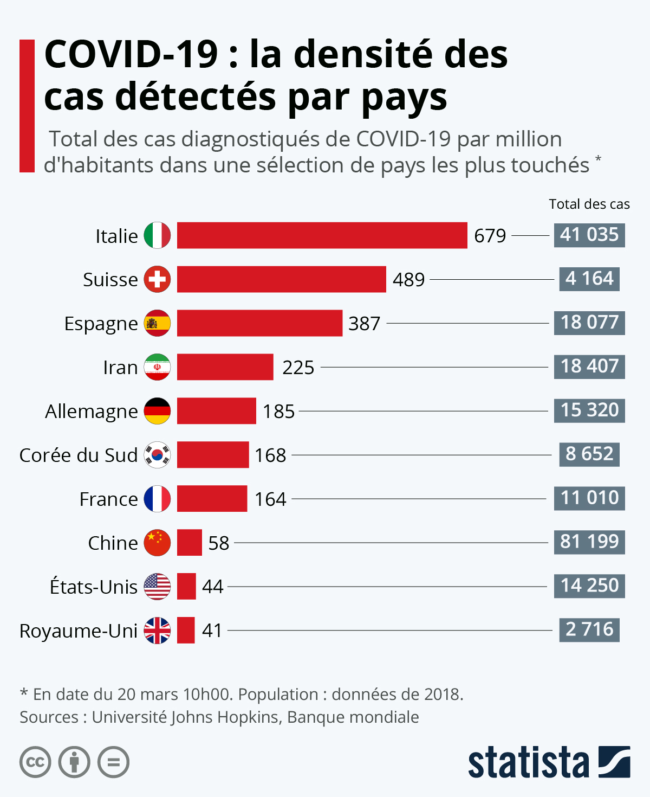

Mario n°32 IGGL5
Instamag
E-pandémic
Actuallités sur la pandémie

Bilan du Mars 2020
1h
Des experts américains indépendants débattrons en direct ce jeudi, des mérites d'un vaccin contre le covid-19, tandis qu'en Europe l'Agence européenne des médicaments,elle aussi en pleine délibération sur plusieurs candidats-vaccins,s'est dite victime d'une cyberattaque
1mois
La pandémie a fait plus de 1.5 millions de morts dans le monde depuis fin décembre 2019.Quelques 68.2 millions de cas d'infection ont été officiellement diagnostiqués >
5j
L'Allemagne va fermer les commerces non essentiels, les Etats-Unis se préparent à vacciner. Berlin enregistre près de 30000 nouveaux cas chaque jour dans le pays, le vaccin anticoronavirus Pfizer-BioNTech devrait être admnistré à partir de lundi à des millions d'Américains.
15h
A l'approche des fêtes de fin d'année, alors que l'épidémie circule toujours activement, les autorités alertent sur les risques d'un relâchement dans le comportement des populations
2h
Les Etats-Unis, le Brésil, le Mexique ou encore le Royaume-Uni font partie des pays les plus touchés concernant le total des morts déclarés.
1an
Jean Castex et plusieurs de ses ministres int précisé,lors d'une conférence de presse, les modaliyés de la vaccination qui devait commencer dans les prochaines semaines.Le premier ministre a confirmé que le vaccin ne serait pas obligatoire et qu'il serait gratuit-1.5 milliards d'euros ont été provionnés à cette fin
1semaine